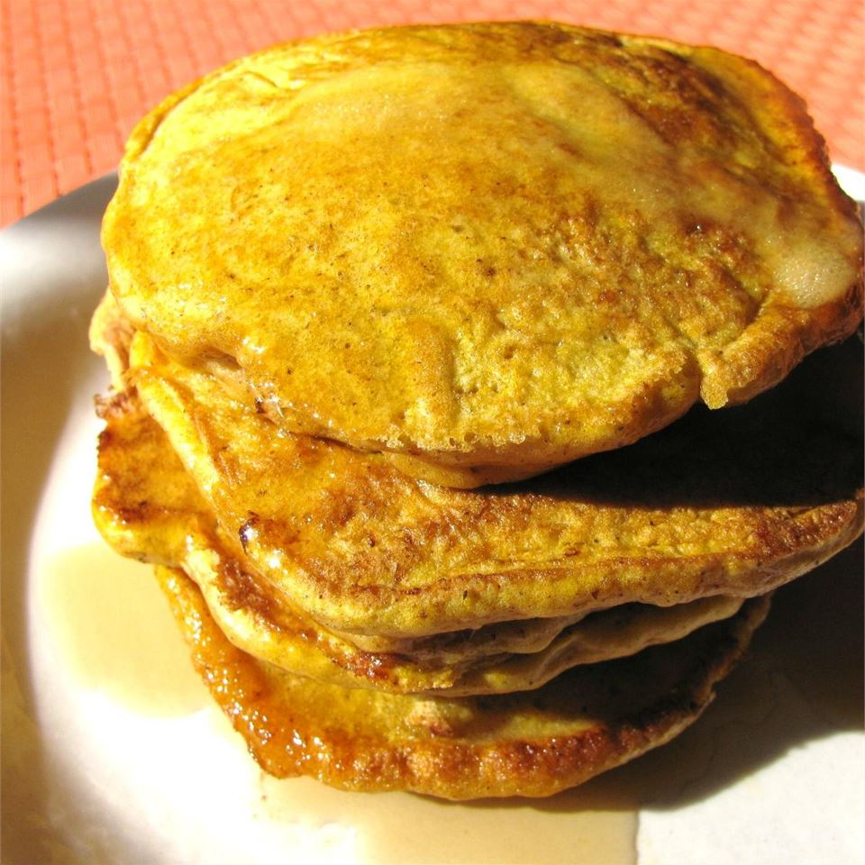

Pumpkin Pancakes

These pumpkin pancakes are paleo-friendly and seasoned with cloves, ginger, and cinnamon.
Ingredients
- ¼ cup pumpkin puree
- 2 tablespoons almond milk
- 2 eggs
- 1 teaspoon maple syrup
- 1 tablespoon vanilla extract
- 2 tablespoons coconut flour
- ½ teaspoon baking soda
- ¼ teaspoon salt
- ½ cup almond meal
- ½ teaspoon ground cinnamon, or to taste
- ¼ teaspoon ground ginger, or to taste
- ⅛ teaspoon ground cloves, or to taste
- 2 teaspoons vegetable oil, or as needed
Directions
- Mix pumpkin puree, almond milk, eggs, maple syrup, and vanilla extract together in a bowl until smooth.
- Whisk coconut flour, baking soda, salt, almond meal, cinnamon, ginger, and cloves together in a separate bowl.
- Stir pumpkin mixture and flour mixture together in a pourable container until well incorporated. Allow batter to sit for 3 minutes.
- Heat vegetable oil in a skillet over low heat. Pour silver dollar-sized circles of batter into the hot oil. Cook until lightly browned, about 5 minutes per side.